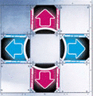
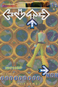

Home Page
F.A.Qs
Statistical Charts
Past Contests
Scheduled Contests
Award Contest
| Online Judge | Problem Set | Authors | Online Contests | User | ||||||
|---|---|---|---|---|---|---|---|---|---|---|
| Web Board Home Page F.A.Qs Statistical Charts | Current Contest Past Contests Scheduled Contests Award Contest | |||||||||
|
Language: Tango Tango Insurrection
Description You are attempting to learn to play a simple arcade dancing game. The game has 4 arrows set into a pad: Up, Left, Down, Right. While a song plays, you watch arrows rise on a screen, and when they hit the top, you have to hit the corresponding arrows on the pad. There is no penalty for stepping on an arrow without need, but note that merely standing on an arrow does not activate it; you must actually tap it with your foot. Many sequences in the game are very fast-paced, and require proper footwork if you don't want to tire yourself out. Write a program to determine the easiest way to execute a certain sequence of arrows.
We will work with a basic time unit of an eighth-note. At any given time, your left foot and right foot will each be on distinct arrows. Only one foot may perform an action (changing arrows and/or tapping) during any time unit; jumping is not allowed. Also, you must remain facing forward in order to see the screen. This puts limitations on which feet you can use to hit which arrows. Finally, hitting two arrows in a row with the same foot ("double-tapping") is exhausting, because you can't shift your weight onto that foot. Ideally, you want to alternate feet all the way through a string of consecutive arrows. Performing an action with a foot costs 1 unit of energy if it did NOT perform an action in the previous time unit. If it did, then it costs 3 units if it doesn't change arrows, 5 units if it moves to an adjacent arrow, and 7 units if it moves directly across the pad (between Up and Down, or Left and Right). Under normal circumstances, you can't put your left foot on Right, or your right foot on Left. However, you CAN do a temporary "crossover": if your left foot is on Up or Down, you can twist your hips and put your right foot on Left - but until your right foot moves away, you can't move your left to a different arrow. (Imagine the tangle your legs would get into if you tried!) Similarly, you can cross your left foot over/behind your right. Input You will be given multiple arrow sequences to provide foot guides for. Every sequence consists of a line containing from 1 to 70 characters, representing the arrow that must be hit at each time unit. The possible characters are U, L, D, and R, signifying the four arrows, or a period, indicating that no arrow need be hit. Assume that your left and right feet start on the Left and Right arrows for the first time unit of a sequence.
There are at most 100 sequences. Input is terminated by a line consisting of a single #. Output For each input sequence, output a string of the same length, indicating which foot should perform an action at each time step, or '.' if neither does. If there are multiple solutions that require minimal energy, any will do. Sample Input LRLRLLLLRLRLRRRRLLRRLRLDU...D...UUUUDDDD # Sample Output LRLRLLLLRLRLRRRRLLRRLRLRL...R...LLLLRRRR Source | ||||||||||
[Submit] [Go Back] [Status] [Discuss]
All Rights Reserved 2003-2013 Ying Fuchen,Xu Pengcheng,Xie Di
Any problem, Please Contact Administrator